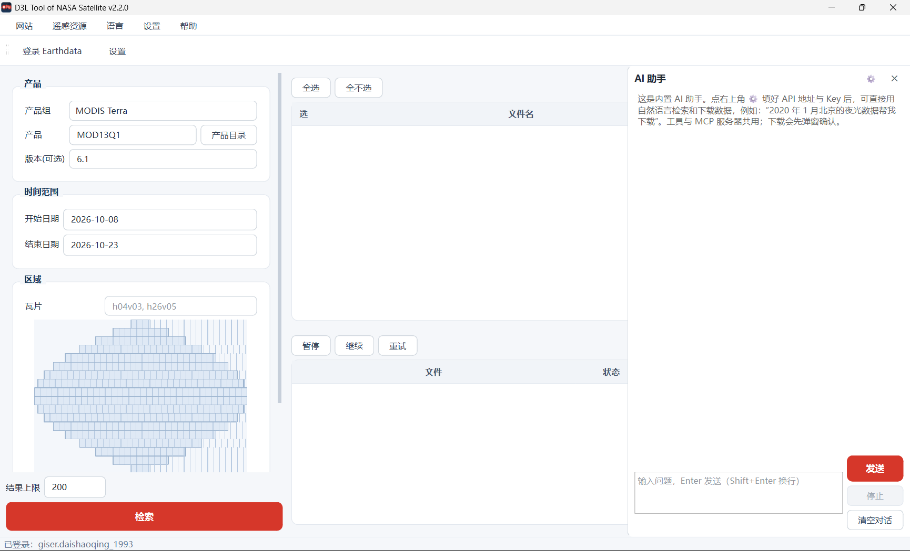

Everything in one app
Built-in search
Pick a product and dates, then click tiles on the 36×18 sinusoidal map (or type coordinates / a bounding box) — no manual order creation on the NASA website.
Full coverage
MODIS, VIIRS (LAADS DAAC) and MERRA-2 (GES DISC) with a curated
catalog — and any CMR short_name works too.
Robust downloads
Parallel queue, chunked progress, HTTP Range resume, automatic retries and file-size validation — safe on slow or unstable links.
MCP server + AI Assistant
Since v2.1, d3ltool-mcp exposes 11 tools (search, tile
math, time-series sampling, in-app plotting, downloads) to Claude
Desktop, Cursor, ZCode and any MCP client,
reusing the sign-in saved on your machine; the GUI gains a floating
right-edge AI Assistant drawer that drives the same tools with
plain language and charts fetched series itself. How to wire it up →
Point time series
Since v2.3, plot a pixel's changing values for any MODIS/VIIRS or MERRA-2 layer — sampled directly over NASA OPeNDAP with one-click CSV export, no third-party subset service.
Bilingual UI
One-click 中文 / English switch in the menu.
Cross-platform & proxy
Windows exe, macOS .app, Linux binary (CI builds) — or
pip install d3ltool. Proxy support for complex
network environments.
Main window

Three steps
Get the app
Double-click D3LToolNASA.exe — a single file, no
Python needed. Sign in with your free
NASA Earthdata account
under “Settings” (search works without login; downloads need it).
Search
Choose a product and a date range, click the tiles you need on the map, and hit Search.
Download
Tick the files you want, add them to the queue and let the resumable downloader finish the job.
Install & sign in
Double-click D3LToolNASA.exe — a single file, no Python
needed; the macOS .app and Linux binaries are on
GitHub
Releases, and CLI users can simply pip install d3ltool.
Sign in under “Settings → Sign in to Earthdata” with your free
NASA Earthdata account —
search works without login, downloads need it. Credentials stay on this
machine only (~/.netrc).
Search
Pick a product group and product (or “custom” for any CMR
short_name), optional version (blank = latest) and start/end
dates. For the area, click tiles on the sinusoidal map (multi-select, or
type h04v03, or use the lat/lon locator) — or enter a
bounding box for MERRA-2 style data. Hit the red Search button and
results appear in the top-right table.
Download
Tick files in the results table and click “Add to download queue”. The task table shows live per-file progress and speed with pause/resume/retry; finished files are skipped on re-download and interrupted ones resume automatically. Download folder, concurrency and proxy live in “Settings”.
# command line
pip install d3ltool
d3ltool search VNP46A1 --start 2020-03-01 --end 2020-03-31 --tile h04v03
d3ltool download VNP46A1 --start 2020-03-01 --end 2020-03-31 --tile h04v03 --dest D:/data
d3ltool search M2T1NXSLV --start 2019-08-01 --end 2019-08-31 --bbox 100 20 120 40
Time series
Open the right-edge time-series drawer, pick a product and layer, enter latitude/longitude and a date range, and hit “Plot series” — the pixel's values are sampled over NASA OPeNDAP (LAADS for MODIS/VIIRS, GES DISC for MERRA-2, reusing your sign-in) and drawn as a line chart, exportable to CSV with one click; “Clear chart” resets the plot. For large-scale analysis, download the raw files instead.
MCP server & AI assistant
d3ltool-mcp exposes 11 tools (search, tile math, time-
series sampling, in-app plotting, download control) over stdio for
Claude Desktop, Cursor, ZCode and any MCP client;
the right-edge AI Assistant drawer in the GUI drives the same tools
with plain language. Wiring examples live in the
integration
guide.
Menus
The “Websites” menu links the project site, the author's blog and NASA portals; “RS resources” is a curated remote-sensing list; “Help” holds Donate and About. The UI language switches under “Language”.
From 2018 to today
D3L Tool was created by Dr. Dai in 2018 (v1.0), when the LAADS FTP servers were shut down and the official Python scripts were hard for non-programmers — v1 automated order downloads through browser automation. Eight years later, v2 is a complete rewrite on top of NASA's official earthaccess library and the CMR search service.
Dependencies & acknowledgments
D3L Tool of NASA Satellite is released under a MIT license and builds on several open source projects:
PySide6 (Qt for Python) — cross-platform GUI library, LGPL-3.0 · doc.qt.io/qtforpython
earthaccess — NASA Earthdata access library, MIT · earthaccess.readthedocs.io
requests — Apache 2.0 · requests.readthedocs.io
PyInstaller — GPL · www.pyinstaller.org
v1.0 (2018, browser automation) was built on tkinter, selenium and Tristan Quaife's laads-data-download.py; it is no longer maintained and stays in the repository history.
The development of D3L Tool has been supported by Tristan Quaife, MorvanZhou and NASA. Special thanks for GeoDa.
Questions & feedback
- Usage problems → the user guide above
- Bugs and ideas → GitHub Issues
- Anything else → dsq1993qingge@163.com
D3L Tool of NASA Satellite uses an MIT License.